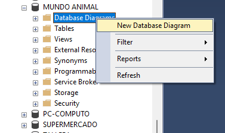
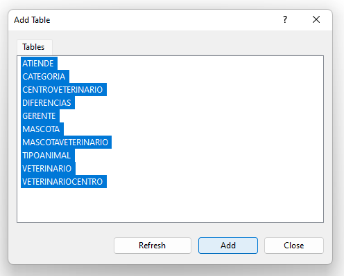
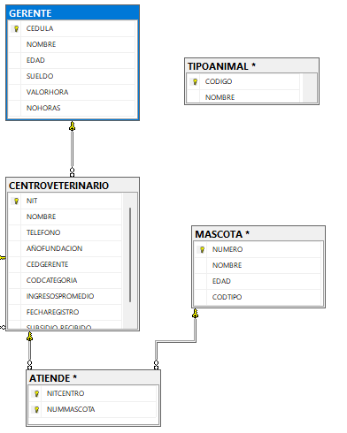
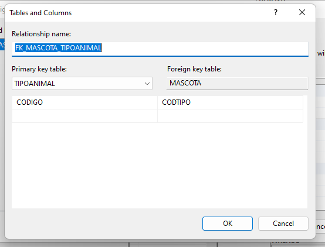
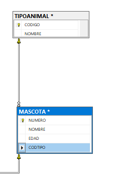
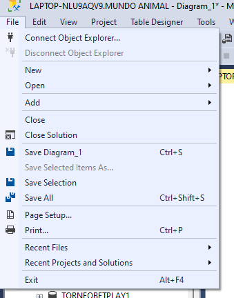

SQL Server, así como la mayoría de los motores de bases de datos, poseen un ambiente gráfico para hacer las actividades. Uno de esos ambiente gráficos permite mirar la estructura de la base de datos.
A continuación vamos a explicar como se construye el diagrama de la base de datos y como, a partir de él, podemos relacionar tablas.
 |
Cuando estamos ubicados en la carpeta de la base de datos, hay otra carpeta llamada Database Diagrams, la cual permite generar el diagrama o la estructura de la base de datos, en ambiente gráfico. |
|  | Para generar el diagrama de la base de datos, le damos clic derecho a la carpeta Database Diagrams, y escogemos la opcion New Database Diagram. |
 |
Aparece la lista de tablas existentes en la base de datos. |
|  | Seleccionamos las tablas que queremos mirar en el diagrama de la base de datos y le damos clic al botón Add. |
|  |
Podemos mirar parte del diagrama de la base de datos generado. Cada tabla aparece con sus campos y las relaciones que hay entre dichas tablas. Como se puede observar, la tabla MASCOTA y TIPOANIMAL no están relacionadas entre sí. Se procede a explicar cómo se configura esta relación por modo gráfico, a través del diagrama de la base de datos. Con el mouse presionado, arrastramos la FK (CODTIPO en MASCOTA) hacia la PK con la que se relaciona (CODIGO en TIPOANIMAL). |
|  |
Cuando se deja de presionar el mouse, luego de arrastrar lo anteriormente mencionado, aparece la siguiente ventana. La información que apárece es muy importante porque a través de ella podemos saber si la relación quedó bien configurada. A mano izquierda se ven los datos de la tabla que tiene la PK involucrada en la relación, tabla TIPOANIMAL, campo CODIGO. A mano derecha aparecen los datos de la tabla que tiene la FK involucrada en la relación, tabal MASCOTA, campo CODTIPO.
|
|  |
Cuando vemos que la relación quedó bien configurada, damos clic en el botón OK, y ya aparecen las dos tablas debidamente relacionadas. Es importante advertir que para que cualquier cambio hecho a través del diagrama, tenga efecto en la base de datos, hay que grabar el diagrama. |
|  |
Esta grabación se hace a través de la opción File, Save Diagram. Al diagrama hay que darle un nombre, como un objeto más de la base de datos que es, y de esta manera queda el diagrama grabado, y todos los cambios hechos a través de él, toman efecto en la base de datos. |
Video: